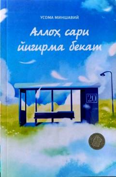

ASAllohga yaqinlashish va ma'naviy poklanish yo'lidagi yigirma bosqichli qo'llanma.
Ushbu kitob insonning Alloh taolo bilan bo'lgan munosabatlarini qayta ko'rib chiqishga va ma'naviy kamolotga erishishga chorlaydi. Muallif Qur'on oyatlari asosida Allohga yaqinlashish yo'lidagi to'siqlarni yengib o'tish uchun yigirma bosqichli yo'riqnomani taqdim etadi.